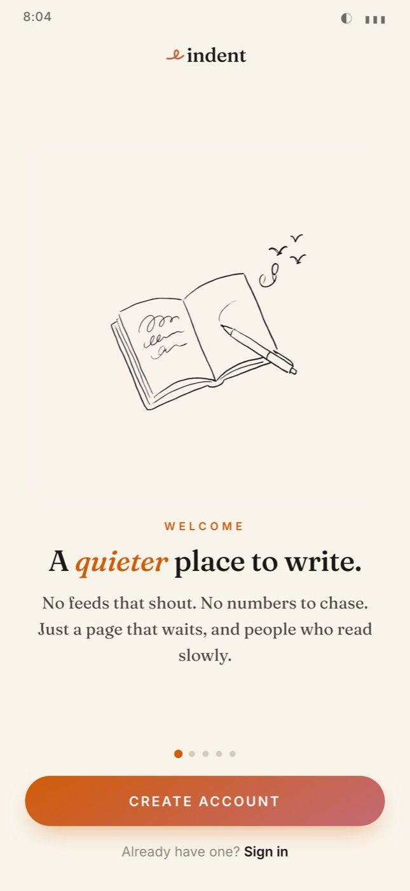
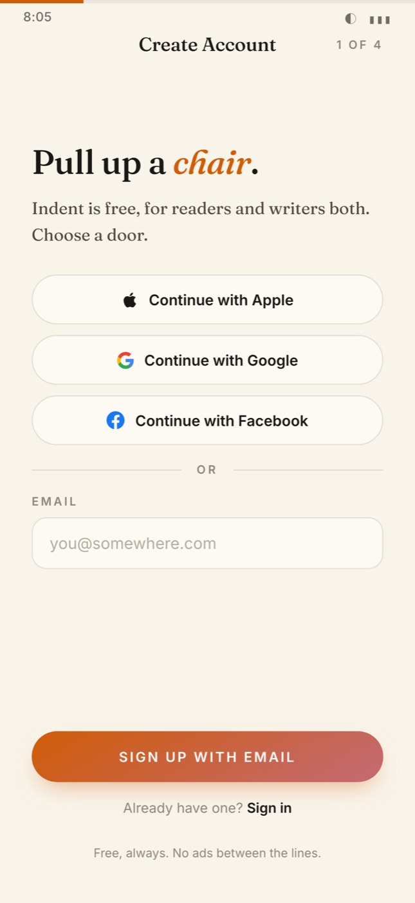
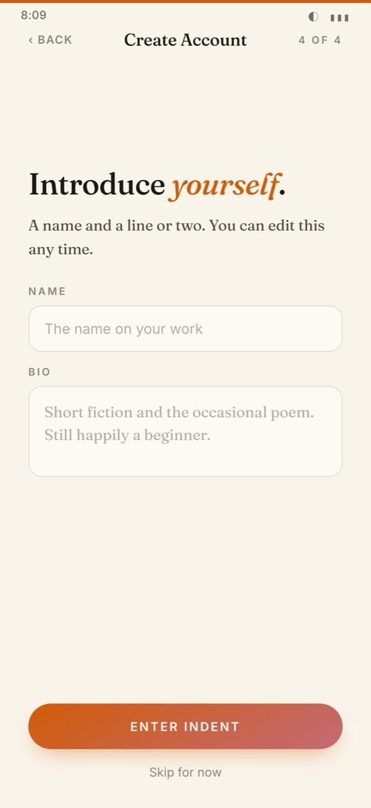
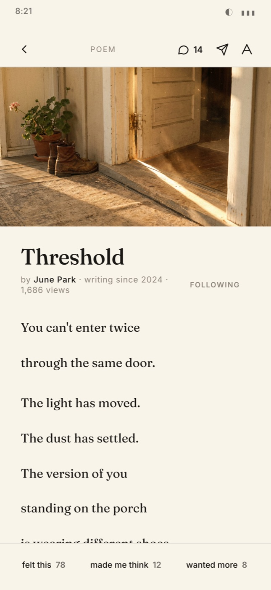
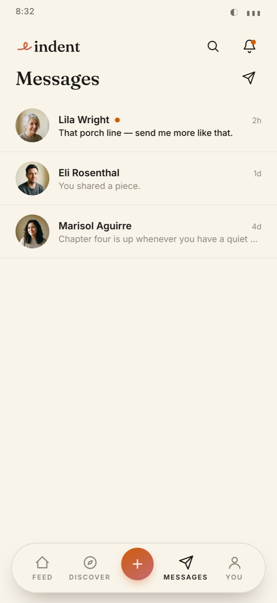
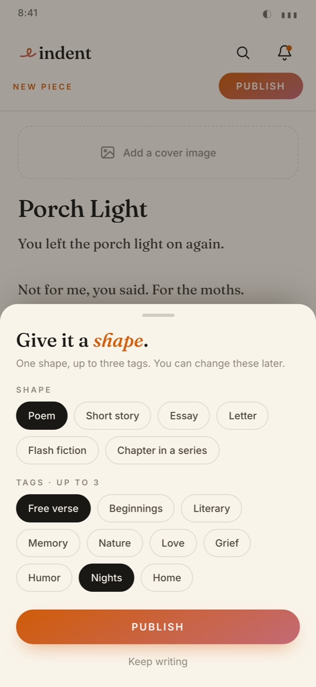
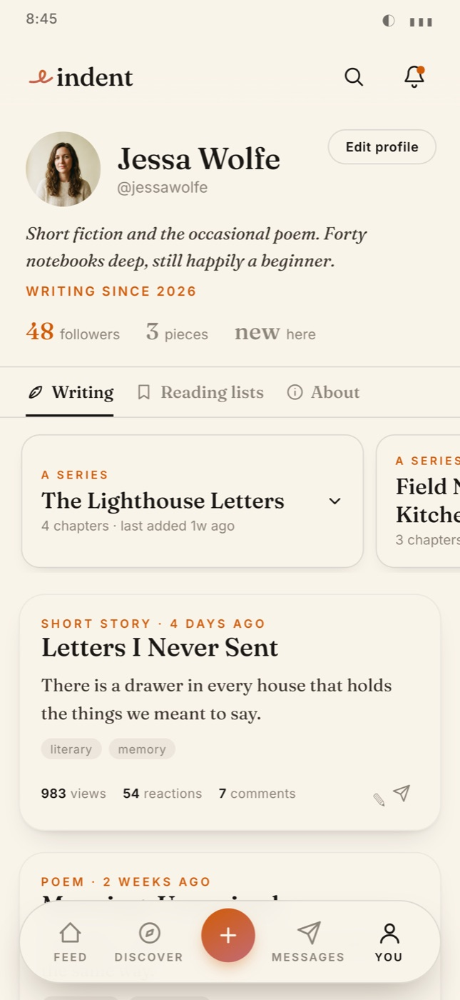
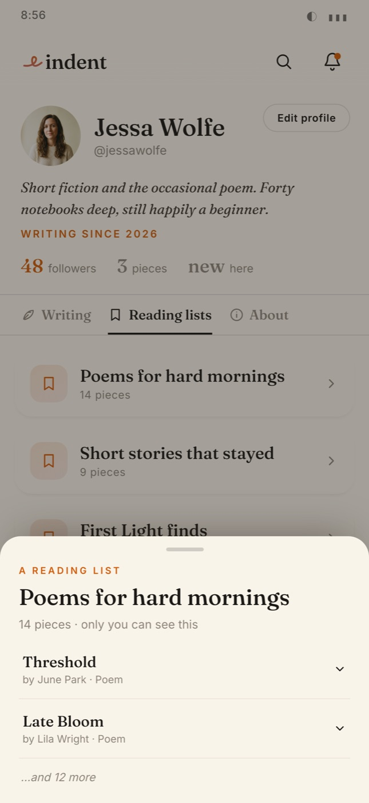

I kept thinking about the literary-minded amateur. Someone writing because they love writing, who wants their work read kindly and wants to read others. They have nowhere good to go. On every existing platform they end up buried, starved, lost, or intimidated.
Indent is calmer than Wattpad, more discoverable than Substack, warmer than Scribophile. I designed it against the grain of the modern writing internet, on purpose.
Buried under genre fiction.
Literary beginners disappear beneath leaderboards and YA serials. Discovery rewards volume, not voice.
Starved without a list.
Excellent if you arrive with an audience. Punishing if you don’t. No native discovery for new voices.
Optimized for SEO, not story.
Recipes for traffic crowd out the literary essay. The platform rewards titles that perform in search.
Narrow or workshop-clinical.
Scribophile, Royal Road, AO3. Excellent within their lanes. None feel like a calm, mobile-first home.
the Indent positioning statement
The platform measures real reading behavior: pieces opened, time spent, comments left, comment quality. That weights Discover without making anyone’s reading public. You earn visibility by doing the work of reading, not performing it.
Values, not features. Each one a guardrail against the drift that makes other writing platforms feel hostile to beginners.
Onboard with intention.
Four steps with visible progress. Welcome, pick what you read, read three things, then an optional first paragraph about how you came to writing.
Publish a piece.
Pick a shape: poem, short story, chapter. Every first publish lands in First Light for 72 hours, so newcomers get an equal spotlight.
Read and respond, daily.
Paper, sepia, or dark. Leave a reaction richer than a heart: felt this, made me think, wanted more.
Discover what to read next.
First Light shelf, a weekly Editor’s Pick, and sort tabs. Hand-curated for the first six months. No infinite scroll.
Follow and be notified.
Active-signal notifications only: responses to your work, new chapters in series you read, a mentor’s note.
Share and converse.
Share a piece with anyone. It lands in a message thread as a tappable card that opens straight into the reader.
Welcome
A notebook, some birds.
Write
A messy desk is allowed.
Make space
The indent, literally.
Share
Paper planes.
Discover
Reading in the grass.
A coffeehouse, not a software company.
Orange, rose, cream paper, ink. Warm, unhurried, direct. The design language is a posture, the same one I want the community to take.
Literary serif, calm sans.
Cream paper underneath, a literary serif on top, a single calligraphic mark for the wordmark.
The prototype shows public per-piece view counts. That was a stakeholder request, and it conflicts with the brief’s locked privacy principle. My call: make view counts author-only. A small UI change with a large cultural consequence, exactly the kind of decision that deserves an explicit sign-off, not a quiet ship.
Click through the prototypeWhat’s defensible about Indent long-term is culture, not features. A kinder Wattpad could be copied. The first hundred members and the norms they set cannot.
From concept to a working prototype.
 FigmaConcept, IA, flows and UI
FigmaConcept, IA, flows and UI ClaudeThe React prototype
ClaudeThe React prototype HiggsfieldImagery
HiggsfieldImagery HTMLStructure, built by hand
HTMLStructure, built by hand CSSLayout, styling and motion
CSSLayout, styling and motion JavaScriptInteractions and the working prototype
JavaScriptInteractions and the working prototype